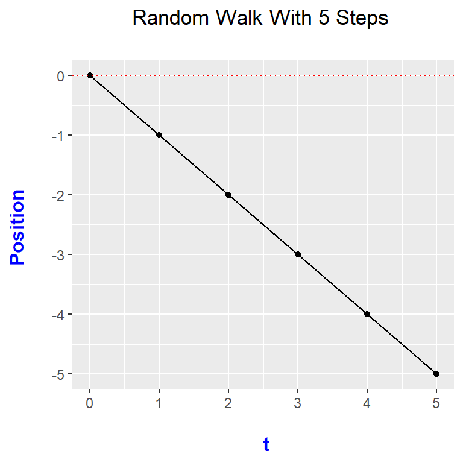
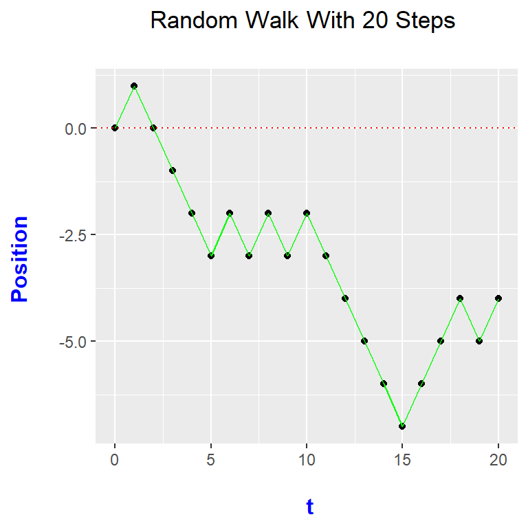

Hi. This page is about using R to simulate random walks. Results are then plotted in R with the ggplot2 package.
In here, the random walk is referred as the symmetric random walk. A random walk is a stochastic (random) process where it is based on a sequence of random variables indexed by time.
Suppose we have a random variable \(X_t\) at time \(t\) where
\[X_t = +1 \text{ with a probability of 0.5 }\]
and
\[X_t = -1 \text{ with a probability of 0.5 }\]
The random walk is the the sum of these \(X_t\) random variables and can be seen as the position of the random process at time \(t\).
In math notation, this sum can be represented as:
\[M_t = \displaystyle\sum_{t=1}^{n} X_t\]
with \(M_0 = 0\) (Starting point at 0.)
Once how the random walk works is understood, you can code a random walk simulation into R with the ggplot2 data visualization package.
Assuming ggplot2 is installed into R, loading ggplot2 can be done by typing in:
library(ggplot2)
Creating The Random Walk Function
In R, I create a random walk function which takes in a time (in seconds) and outputs a vector of random walk positions at each time \(t\). This output is:
\[M_t = \displaystyle\sum_{t=1}^{n} X_t\]
with \(M_0 = 0\) (Starting point at 0.)
Since a sum is used, a for loop is used in the function.
To model the random variable which is +1 or -1 with a probability of 0.5 each, the sample() function is used.
# Random Walk Plot In R With ggplot2
# Resouce: https://stackoverflow.com/questions/21991130/simulating-a-random-walk
# The random walk is a running total/sum based on a random variable
# that is +1 or -1 depending on the outcome.
# In here, we deal with a symmetric random walk where the expected value of the running total/sum
# is zero and the random variable has an equal chance of being +1 or -1.
library(ggplot2)
# Random Walk Function:
# Input: Time in seconds; Output: The sequence of sums at each time point with M_0 = 0.
random_walk <- function(t = 1){
if (t <= 0 | t %% 1 != 0){
print("Please enter a whole number that is 1 or greater.")
} else {
# Initialize
time_vect <- 0:t
sum_vect <- c(0)
# Remember that M_0 = 0 meaning that the sum at t = 0 is 0
for (i in 1:t){
sum_vect[i + 1] = sum_vect[i] + sample(x = c(-1, 1), size = 1, prob = c(0.5, 0.5))
}
return(sum_vect)
}
}
Once this function has been implemented into R, this function can be used to help in plotting a random walk path.
time = 5
rw5 <- random_walk(5)
data_rw5 <- data.frame(0:5, rw5)
data_rw5## X0.5 rw5
## 1 0 0
## 2 1 -1
## 3 2 0
## 4 3 1
## 5 4 2
## 6 5 1colnames(data_rw5) <- c("t", "Position") #Rename columns
data_rw5## t Position
## 1 0 0
## 2 1 -1
## 3 2 0
## 4 3 1
## 5 4 2
## 6 5 1
Once the coding for the random walk function is done, the ggplot2 code portion is not that bad. Here is the code and plot.
# Ggplot with time on horizontal axis, and running total on vertical axis.
ggplot(data_rw5, aes(x = t, y = Position)) +
geom_point() +
geom_line() +
labs(x = "\n t", y = "Position \n", title = paste0("Random Walk With ", time, " Steps \n")) +
theme(plot.title = element_text(hjust = 0.5),
axis.title.x = element_text(face="bold", colour="blue", size = 12),
axis.title.y = element_text(face="bold", colour="blue", size = 12)) +
geom_hline(yintercept = 0, colour = "red", linetype = "dotted")
The main pieces in the above code lie in this portion:
ggplot(data_rw5, aes(x = t, y = Position)) +
geom_point() +
geom_line()
Code after geom_line is for labels, fonts and for the red horizontal dotted line at 0 for position. This red dotted line represents the mean line of the symmetric random walk.
Instead of having the for loop portion in the random walk function above, you can use the cumsum() function (short for cumulative sum).
The cumsum() function outputs a vector of sums which is similar to the sum/Sigma notation mentioned above.
This portion of code:
# Remember that M_0 = 0 meaning that the sum at t = 0 is 0
for (i in 1:t){
sum_vect[i + 1] = sum_vect[i] + sample(x = c(-1, 1), size = 1, prob = c(0.5, 0.5))
}
can be replaced by this code (with output) below.
# Using the cumsum() function to generate random walk more efficently:
time <- 5
rw_psn <- c(0, cumsum(sample(x = c(-1, 1), size = time, prob = c(0.5, 0.5), replace = TRUE)))
rwalk_data5 <- data.frame(0:5, rw_psn)
rwalk_data5## X0.5 rw_psn
## 1 0 0
## 2 1 1
## 3 2 0
## 4 3 -1
## 5 4 -2
## 6 5 -3
Here is the full code and output with the cumsum() function.
# Using the cumsum() function to generate random walk more efficiently:
time <- 5
rw_psn <- c(0, cumsum(sample(x = c(-1, 1), size = time, prob = c(0.5, 0.5), replace = TRUE)))
rwalk_data5 <- data.frame(0:5, rw_psn)
rwalk_data5## X0.5 rw_psn
## 1 0 0
## 2 1 -1
## 3 2 -2
## 4 3 -3
## 5 4 -4
## 6 5 -3colnames(rwalk_data5) <- c("t", "Position")
# Ggplot with time on horizontal axis, and running total on vertical axis.
ggplot(rwalk_data5, aes(x = t, y = Position)) +
geom_point() +
geom_line() +
labs(x = "\n t", y = "Position \n", title = paste0("Random Walk With ", time, " Steps \n")) +
theme(plot.title = element_text(hjust = 0.5),
axis.title.x = element_text(face="bold", colour="blue", size = 12),
axis.title.y = element_text(face="bold", colour="blue", size = 12)) +
geom_hline(yintercept = 0, colour = "red", linetype = "dotted")
Notice that the random walk path is different from the one before as it is a different random walk path realization.
This final random walk plotting function combines items from the previous two sections. I have included the full code and one example.
## Making It As A Random Walk Plotting Function:
# Input: Time in seconds; Output: The sequence of sums at each time point with M_0 = 0.
random_walk_plot <- function(t = 1, col_line = "black"){
if (t <= 0 | t %% 1 != 0){
print("Please enter a whole number that is 1 or greater.")
} else {
# Random Walk Steps:
psn_vector <- c(0, cumsum(sample(x = c(-1, 1), size = t, prob = c(0.5, 0.5), replace = TRUE)))
# Put results into a data frame:
rwalk_df <- data.frame(0:t, psn_vector)
colnames(rwalk_df) <- c("t", "Position") #Rename columns
# Ggplot with time on horizontal axis, and running total on vertical axis.
ggplot(rwalk_df, aes(x = t, y = Position)) +
geom_point() +
geom_line(colour = col_line) +
labs(x = "\n t", y = "Position \n", title = paste0("Random Walk With ", t, " Steps \n")) +
theme(plot.title = element_text(hjust = 0.5),
axis.title.x = element_text(face="bold", colour="blue", size = 12),
axis.title.y = element_text(face="bold", colour="blue", size = 12)) +
geom_hline(yintercept = 0, colour = "red", linetype = "dotted")
}
}
# Function calls:
random_walk_plot(t = 20, col_line = "green")